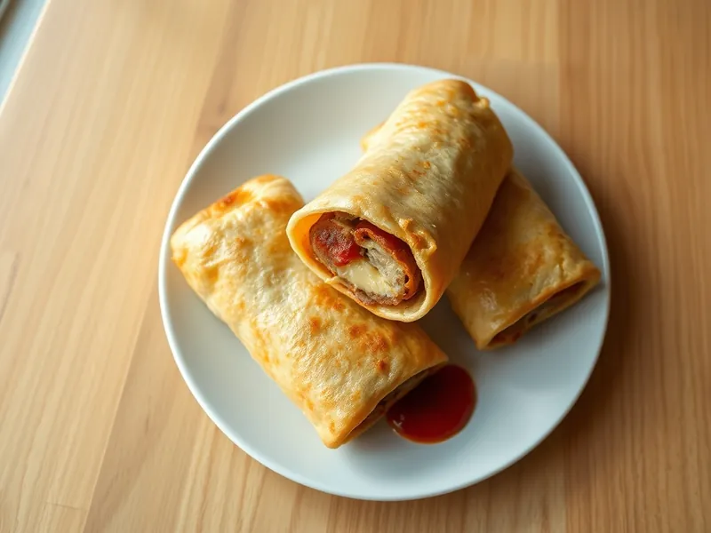

Сосиски в лаваше с сыром на сковороде
Сосиски с сыром, завёрнутые в лаваш, обмакнутые в яйцо и обжаренные до румяности
15 мин2 порц.643 ккал на порциюБ 30 · Ж 46 · У 27Русская кухня
Открыть в приложении: порции, таймеры, список покупок
Продукты на 2 порц.
- Лаваш тонкий1 шт
- Сосиски4 шт
- Сыр твёрдый60 г
- Яйцо куриное2 шт
- Растительное масло1 ст. л.
- Соль1 щеп.
- Кетчуп по желанию2 ст. л.
Как готовить
- Разрежьте лаваш на 4 полосы по ширине сосиски, сыр нарежьте тонкими брусочками, 3 минуты.
- Положите на край каждой полосы сосиску и брусочек сыра, плотно сверните рулетом.
- Взбейте яйца с солью, обмакните в них рулеты.
- Разогрейте масло на сковороде на среднем огне и выложите рулеты швом вниз.
- Жарьте 5-6 минут, переворачивая, пока со всех сторон не появится золотистая корочка, а сыр не начнёт плавиться. Подавайте с кетчупом.
Совет. Швом вниз рулет не раскроется: яйцо склеит лаваш за минуту. Вместо сосисок можно взять полоски ветчины.